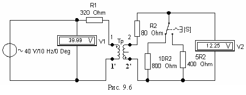

Задание 3. Снять и построить АЧХ трансформатора по напряжению Hu(f) = U2(f) /U1(f) при нагрузках Rн = Rн1 = 10R2, Ом и Rн = Rн2 = 5R2, Ом при изменении частоты от 10 до 2000 Гц.
С этой целью собрать схему (см. рис. 9.6) на рабочем поле программы EWB или на рабочем поле программы MS8 Education (либо открыть файл Lr9-2.ewb при выполнении работы в среде EWB или файл Lr9-2.ms8 при выполнении работы в среде MS8SD). Согласно варианту установить параметры элементов схемы.
При снятии характеристик использовать значение ЭДС источника е, вычисленное в задании 1. Показания вольтметров для каждой частоты при очередном установлении сопротивления нагрузки посредством ключа S занести в табл. 9.3.
Построить графики АЧХ трансформатора по напряжению Hu(f) для двух значений сопротивления нагрузки: Rн = 10R2 и Rн = 5R2.
Объяснить, почему при уменьшении Rн коэффициент передачи трансформатора по напряжению Hu(f) уменьшается.
Таблица 3.
Частота f, Гц |
Измерено | Рассчитано
Hu(f) = U2/U1 | ||||
| U1, В | U2, В | |||||
| 10R2, Ом | 5R2, Ом | 10R2, Ом | 5R2, Ом | 10R2, Ом | 5R2, Ом | |
| 10 | ||||||
| 20 | ||||||
| 40 | ||||||
| 50 | ||||||
| 75 | ||||||
| 100 | ||||||
| 200 | ||||||